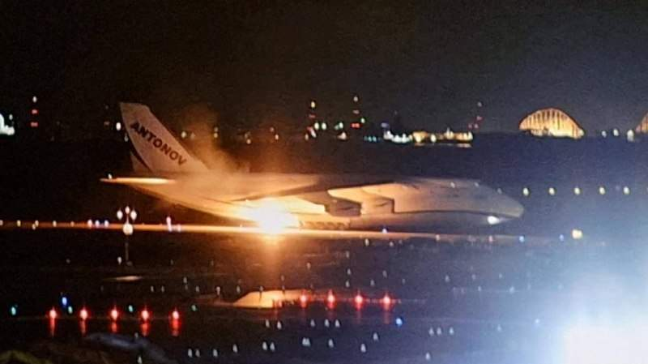

С полуночи ударов по Киеву и крупным украинским городам нет. В сторону Москвы беспилотники тоже не летели.
С полуночи ударов по Киеву и крупным украинским городам нет. В сторону Москвы беспилотники тоже не летели.
Неофициальный дипломатический канал связи Евросовета с Кремлем, который стороны обсуждали летом, остается открытым для обсуждения прекращения огня на Украине и других вопросов урегулирования . Об этом заявил председатель Европейского совета Антониу Кошта. "Канал открыт, и Россия знает: если и когда она действительно захочет поговорить о том, как добиться прекращения огня, как защитить энергетические объекты, она может обратиться". Он нам угрожает что ли?

Украинский Ан загорелся при посадке в Японии. Перегрелись шасси?
Много признаков того, что существует формальная договореность о деэскалации, однако несколько ударов по российской глубинке носят черты операций СБУ – нацеленных на срыв деэскалации. Наблюдаем далее.
Британцы выдвинули кандидатуры пяти потенциальных переговорщиков с Россией от ЕС. Премьер-министр Италии Джорджа Мелони, Президент Финляндии Александр Стубб, Президент Чехии Петр Павел, Премьер-министр Дании Метте Фредериксен, Премьер-министр Норвегии Йонас Гар Стере. Якобы с потенциальными кандидатами уже связались. Все эти кандидаты либо непроходные, либо британские ставленники. В том и идея. То, что визит Виткоффа прошел через посещение Норвегии, говорит о норвежце. Мелони слабая, Фридриксен радикальна, Стубб имеет сильную сторону, соседство пусть и враждебное. Павел слишком интегрирован в элиту НАТО.
Танкер из России с дизельным топливом под флагом Мальты с грузом в 40 000 метрических тонн российского дизельного топлива на борту направляется в Нью-Йорк. Россия согласилась отменить введенный запрет и начать поставки дизельного топлива на мировые рынки, включая США, после соглашения между Владимиром Путиным и Дональдом Трампом.
Армения де-факто уже вышла из ОДКБ, заявил генсекретарь организации Таалатбек Масадыков. "Они слушают еженедельные доклады, но не участвуют в основных наших мероприятиях, учениях и тому подобное..." Армения заморозила членство в ОДКБ в феврале 2024 года.
Еще один удар, традиционно связанный с СБУ. От любого соглашения по Украине пострадают украинские спецслужбы, они это знают. От них сейчас идет тренд на срыв соглашения. О нелегитимности Зеленского им прекрасно известно.
Работа Starlink/Starshield возобновлена не для всех миссий, ситуация остается неясной, заявляют в ВСУ. Очевидно, что-то непонятное происходит с военным управлением на Украине. СБУ проводит показательные акции, которые не раздуваются, командование ВСУ что-то мутит, отстраняясь от запусков Фламинго (все сбиты).
Переговоры, запланированные в ноябре в Абу-Даби, будут в трехстороннем формате Россия-США-Украина, заявил Песков, комментируя возможное участие ЕС в переговорах.
Please open Telegram to view this post Forwarded from Горизонт Событий специально для Haute Future : Ученые нашли странный паттерн в 1000+ случаях предполагаемой реинкарнации 🔗 Исследователи проанализировали крупнейший архив «случаев типа реинкарнации» Университета Вирджинии — 1678 случаев, где ребенок сообщал о воспоминаниях о конкретном умершем человеке. 🫤 Что нашли: 🟢 Медианный промежуток между смертью «прошлой личности» и рождением ребенка — 16 месяцев. 🟢 Если смерть была ожидаемой — около 21 месяца. 🟢 Если внезапной (авария, насилие, острый кризис) — около 12 месяцев. 💃 Эффект сохранялся с учетом качества данных, знакомства семей, соцстатуса и религиозных убеждений. Самое сильное удивление вызвал тот факт, что связь была сильнее в семьях, чьи религии не поддерживают идею реинкарнации. Как отметил соавтор Филип Коззолино, это «не поддерживает идею о том, что социальные убеждения формируют этот паттерн». 5️⃣ 7️⃣ % проанализированных случаев — это неестественная смерть, а 68% — совершенно неожиданная. Средний возраст «прошлой личности» на момент смерти — всего 30 лет. 👺 В индуизме, буддизме и верованиях коренных народов Северной Америки внезапная смерть означает «незавершенные дела», что может подталкивать к скорейшему возвращению. Ученые не исключают, что эти традиции могут влиять на паттерн. 🐦 Авторы подчеркивают: данные наблюдательные, и они «стараются сохранять агностицизм относительно механизма». Главная загадка, по их словам, не в силе связи, а в том, что она вообще существует. 🧡 Горизонт Событий 🧍 Haute Future Scientists Found a Bizarre Pattern in Over 1,000 Cases of Alleged Human Reincarnation - ScienceAlert This is spooky!
Россия вернула 270 военных из украинского плена, взамен переданы 270 пленных ВСУ
Армия обороны Израиля подтвердила гибель двух израильских солдат, которые стали жертвами вооруженного нападения палестинцев на контрольно-пропускной пункт вблизи города Хеврон на Западном берегу. Также сообщается, что еще трое солдат получили легкие ранения.
Российские военные вводят режим тишины на Херсонском направлении с 04:00 мск 27 октября в связи с гуманитарной операцией в районе Алешек, сообщил глава Генштаба Валерий Герасимов.
Наблюдали сегодня за истериками в каналах по поводу обстановки в аэропортах. Знаете, с учетом того, что ситуация вся была рабочая и под контролем, главной ее проблемой были сообщения истериков. Мол какой-то гигантский самолет сесть не может, как будто речь идет о заездолете. Эвакуация в Шереметьево и так далее. Самолет давно сел, истерика не прекращается. Не читайте лучше ничего, чем блогеров на флайтрадаре. Или Соловьева читайте, вот у кого выверенная лента. Все спокойно в Москве.
Наблюдаете за выборами в Израиле? Там сейчас Нетаньяху показывает, как из-за войны с Ираном Трамп тоже будет выигрывать выборы. Обкатывается технология победы без победы.
Посыпались подвиги ИИ. Это все программы нашли. Сначала из-за найденной дыры в PHP файлах, на которых написаны куча сайтов, закрылись сайты госструктур по всему миру. Теперь ИИ нашел уязвимость в мессенджере Signal, которая позволяла злоумышленникам подслушивать разговоры и получать изображение с камеры даже после того, как пользователь нажимал кнопку завершения звонка. Опасность ошибки оценили в 9,3 балла из 10. Разработчики устранили уязвимость еще в сентябре 2026 года, однако подробности о ней стали известны только 20 октября. Подтвержденных случаев использования ошибки для слежки пока нет. Пользователям рекомендуют обновить мессенджер до последней версии.